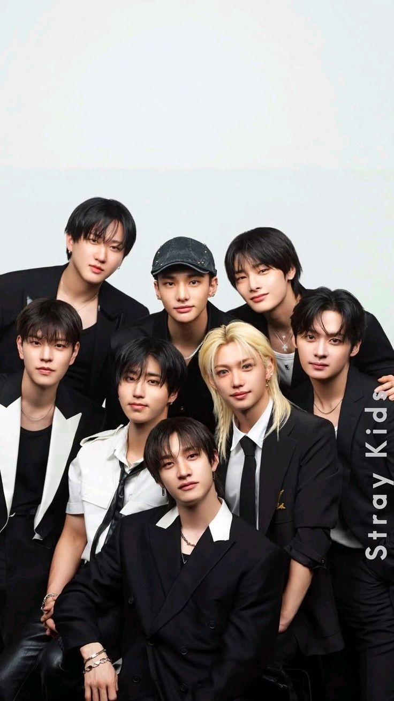
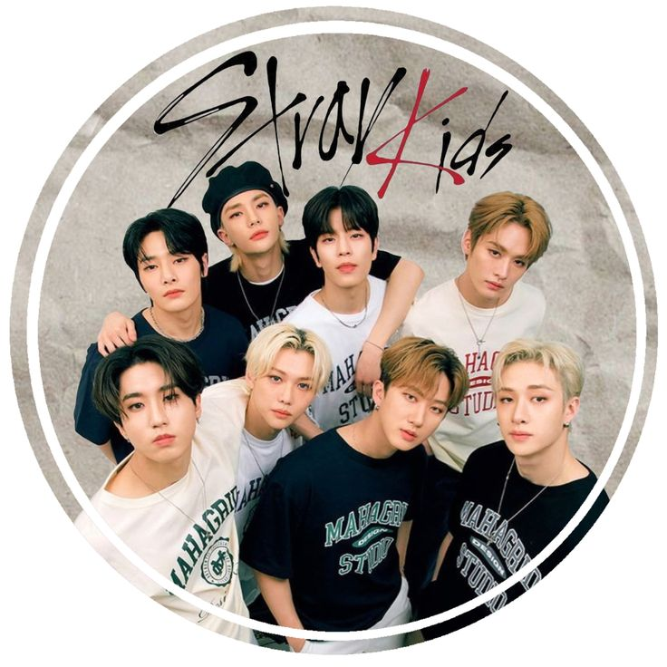

Inicio

El K-pop es un fenómeno musical global originado en Corea del Sur que combina música, moda, baile y cultura visual.
Fan page

El K-pop es un fenómeno musical global originado en Corea del Sur que combina música, moda, baile y cultura visual.

Es un género musical que mezcla pop, hip-hop, R&B y electrónica, caracterizado por producciones visuales impactantes y coreografías precisas.


Algunos grupos famosos como BTS, BLACKPINK, EXO y TWICE han llevado el K-pop a nivel mundial.

Imágenes representativas del estilo visual del K-pop.

El K-pop ha revolucionado la industria musical gracias a su innovación visual y conexión con los fans.